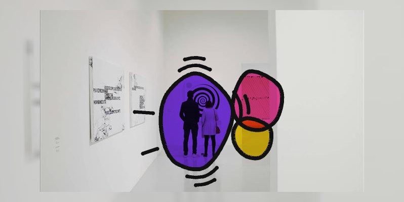
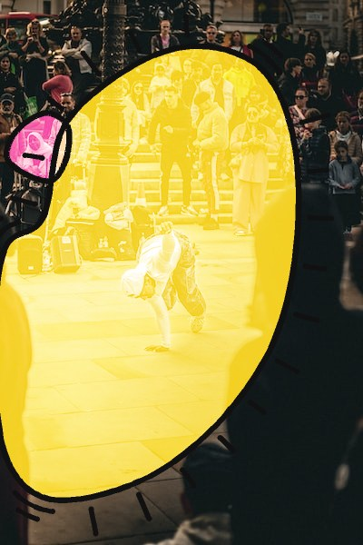
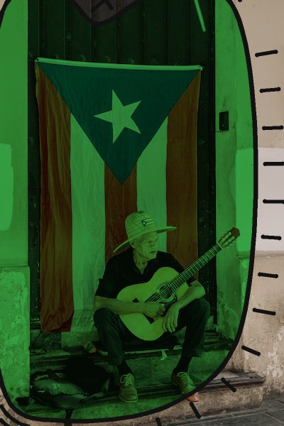
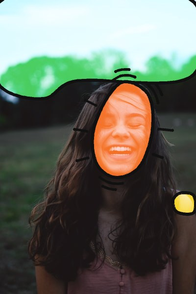

Aplats
Les couleurs flash de gigot posées sur n'importe quelle photo, cernées de noir, avec les traits de vibration de Keith Haring. Sans IA : la photo est seulement analysée pour savoir où peindre. Sur fond clair l'aplat est en multiply, sur fond sombre en screen : la photo reste toujours visible dessous.
Dans le navigateur
Calculé en direct par aplats.js. Survole une photo : les formes s'écartent du curseur.
Clique sur une forme : elle part vers une autre zone de la photo et en prend la silhouette.


En Python
Le même traitement en fichier, par figures.py : pour une affiche, un visuel de réseau
social, un lot de photos d'événements. Chaque image se rejoue à l'identique avec sa graine.

--seed 11
--seed 5
--seed 3005
--seed 6005
--seed 8005
--seed 9005
--seed 11005Utiliser
Python, avec Pillow et numpy :
pip install Pillow numpy
python3 figures.py photo.jpg # -> output/figures/photo.jpg
python3 figures.py dossier/ --variants 3 # trois tirages par photo
python3 figures.py photo.jpg --seed 6005 # rejoue un tirage précisNavigateur, sans dépendance. Les photos doivent venir du même site que la page :
<img src="photo.jpg" data-aplats>
<script src="aplats.js"></script>
Aplats.attach(img, { seed: 7, fill: 'screen', palette: 'vive' })Fichiers
- figures.py · pop.py
- le script Python et sa boîte à outils (analyse, formes, rendu)
- aplats.js
- le même traitement dans le navigateur, avec les formes animées
- exemples/
- les images ci-dessus et leurs graines (
seeds.json)